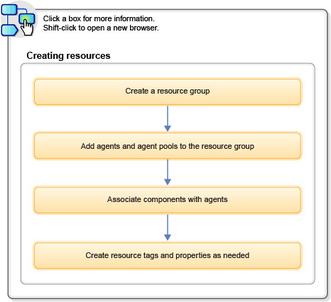

Getting started with creating resources
Resources associate agents with components and, after they are mapped to an application environment, provide deployment targets.
The following diagram outlines the typical steps for creating and running a deployment:

A resource group associates agents or agent pools with components. A resource group can itself belong to a parent group in a hierarchical collection. A component-type resource can point directly to the agent or agent pool that deploys it or point to another resource in a hierarchical chain of resources. If a resource is part of a hierarchy, it delegates its automation, if any, up the chain until it finds an agent.
Resources, just like the items they represent, can have properties tags.
Related topics:
- How to add tags to resources; see Adding tags to objects.
- How to provide user credentials to resources; see Defining default user impersonation credentials.